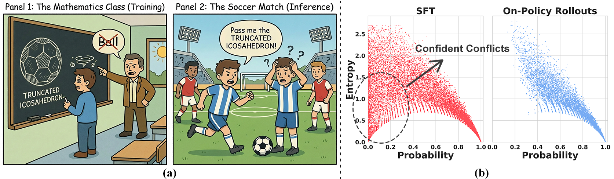

(a) Conceptual illustration. When SFT forces the model to override its strong priors, it creates a Confident Conflict. Fitting these conflicts distorts the model's existing representations, leading to catastrophic forgetting. (b) Token-level entropy-probability landscape. Compared to on-policy rollouts (right), the SFT data (left) exhibits a prominent cluster of Low Entropy, Low Probability tokens.
Supervised Fine-Tuning (SFT) is the standard paradigm for domain adaptation, yet it frequently incurs the cost of catastrophic forgetting. In sharp contrast, on-policy Reinforcement Learning (RL) effectively preserves general capabilities. We investigate this discrepancy and identify a fundamental distributional gap: while RL aligns with the model's internal belief, SFT forces the model to fit external supervision. This mismatch often manifests as "Confident Conflicts"—tokens characterized by low probability but low entropy. In these instances, the model is highly confident in its own prediction but is forced to learn a divergent ground truth, triggering destructive gradient updates.
We present Entropy-Adaptive Fine-Tuning (EAFT), a novel approach that utilizes token-level entropy as a gating mechanism to distinguish between epistemic uncertainty and knowledge conflict. Unlike methods relying solely on prediction probability, EAFT allows the model to learn from uncertain samples while suppressing gradients on conflicting data. Experiments on Qwen and GLM series (4B-32B parameters) across mathematical, medical, and agentic domains support our hypothesis: EAFT consistently matches the downstream performance of standard SFT while mitigating the degradation of general capabilities.
Our work provides several key insights into the mechanisms of catastrophic forgetting and EAFT's effectiveness:
- 1. Confident Conflicts are the primary driver of forgetting. We identify a fundamental distributional gap: SFT data contains a prominent cluster of tokens with Low Entropy, Low Probability—where the model is highly confident in its own prediction but is forced to fit a divergent ground truth. These "Confident Conflicts" trigger destructive gradient updates that distort the model's existing representations.
- 2. Pilot experiment validates our hypothesis. By masking out "Confident Conflict" tokens during training (the bottom 15% in both entropy and probability), we observed that catastrophic forgetting was mitigated compared to standard SFT. This suggests that enforcing updates on these conflicting samples is the primary driver of capability degradation.
- 3. EAFT uses entropy as a soft gating mechanism. Unlike probability-based methods that risk amplifying destructive gradients, EAFT leverages entropy to distinguish rigidity from uncertainty. By down-weighting low-entropy tokens to suppress conflicting gradients, while concentrating supervision on high-entropy ones to facilitate adaptation, EAFT balances domain proficiency with the preservation of general capabilities.
- 4. EAFT achieves Pareto improvement across diverse domains. Experiments on Qwen and GLM series (4B-32B parameters) across mathematical, medical, and agentic domains show that EAFT consistently matches the downstream performance of standard SFT while mitigating the degradation of general capabilities.
EAFT provides a novel approach for mitigating catastrophic forgetting through entropy-based gating, supporting LLM fine-tuning research and advancing robust domain adaptation.